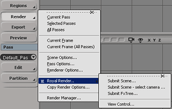

Artist workgroup:
If you are using 3rd party shaders or plugins, you should to setup an SI workgroup in your company.
If you have never used a SI Workgroup, open SI, start the Plugin Manager from the file menu, choose the workgroup tab and click "connect to workgroup".
Select the folder you want to use as a workgroup path. Install all addons, shaders and plugins into the workgroup.
Renderfarm Workgroup:
By default RR uses the path is %rrPluginsNoOS%workgroup_%rrExeVersionMajor%, which is resolved to a path inside the RR folder.
To get the exact folder, just take a look into a render log file of an Softimage job.
It looks like this:
S 24| >set "WorkgroupPath=\\fileserver\Share\RR\render_apps\renderer_plugins\softimage\workgroup_2014"
Set a different workgroup path for the rrClients:
You have to change SIs setenv file.
The setenv file for Softimage is [RR]\render_apps\_setenv\win\softimage.bat.
The setenv file contains more information about how you can set seperate workgroup paths for each Softimage version.
In that file you have a switch
goto %rrExeVersionMajor%
that jumps to the XSI version you are using, e.g.
:2010
Then it sets the workgroup path Set "WorkgroupPath=
Change the path after Set "WorkgroupPath= to your workgroup path.
An edited setenv can look like this one:
@echo on Set "XSI_USERHOME=%rrLocalPrefs%%rrExeVersion%" set XSI_LOG_LOAD_TIME=1 %rrBin%rrCopy -oo -os -d %rrPrefs%%rrExeVersionMajor% %rrLocalPrefs%%rrExeVersionMajor% @echo Set Workgroup path: goto %rrExeVersionMajor% Set "WorkgroupPath=%rrPluginsNoOS%workgroup_%rrExeVersionMajor%" goto done :2012 Set "WorkgroupPath=\\Smaug\shader\WG_XSI_2012" goto done :2013 Set "WorkgroupPath=\\Smaug\shader\WG_XSI_2013" goto done :done |
Notes:
Softimage version:
You should always create a new Workgroup for every major XSI version (one for XSI 7.x, one for XSI 2010...)
A lot of plugins are written for one version only. E.g. Custom renderer or even mental Ray shaders.
You cannot install both versions in one workgroup.
Even if the old version of the plugin can be loaded by an newer XSI version, they can be instable. (I know that at least from my MRay shaders, at some point that can crash)
A workgroup increases with the years. You often have plugins/scripts installed that you do not need any more in the new version of XSI.
A new workgroup is the best way to clean the workgroup.
Linux, Windows:
You can use the same workgroup for Linux and Windows. Windows uses .dll, Linux .so files. Scripts should run on both platforms.
32bit, 64bit:
You can use the same workgroup for different bit versions.
Shaders are always installed in seperate \x86 and \x86-64 folders.
Plugins should be in the folders:
\Application\bin\nt-x86\MyLib.dll
\Application\bin\nt-x86-64\MyLib.dll
\Application\bin\linux-x86\MyLib.so
\Application\bin\linux-x64\MyLib.so
Multiple Workgroups:
If you want to set multipe workgroups, please define them in one line, seperated by an ;
E.g.
Set "WorkgroupPath=\\server\share\workgroupAAA_%rrExeVersionMajor%;\\server\share\XSI\workgroupBBB_%rrExeVersionMajor%"
Different Workgroups per scene:
If you submit from inside XSI via the RR plugin, then you can change that plugin.
Add a new parameter to the XML export <CustomWG> Set your workgroup in there.
Then change the render config files, e.g. \render_apps\_config\3D01__Softimage__2011.cfg
After <SetEnvSoft> add a line
CommandLine_Win=Set "WorkgroupPath=<CustomWG>"
or for Linux:
CommandLine_Lx=setenv WorkgroupPath "<CustomWG>"
If your workgroups are project-based, then they are probably always in the same folder?
So you can set them via \\Fileserver\Share\Projects\%rrJobProject%\MyWorkgroup
Or relative to the scene file/database <Database><../><../><../>MyWorkgroup
If you use for example Arnold 3.6 and 4.1, you can edit some files to use different workgroups for your scenes.
1. Dublicate the render config RR\render_apps\_config\3D01__Softimage__Arnold_2011.cfg for softimage and change the renderer name to Arnold Render 4 for example.
In the file, replace the "%WorkgroupPath%" by "%WorkgroupPath_A%".
2. Edit the file RR\render_apps\_setenv\win\softimage.bat and dublicate the workgroup lines and change it to "%WorkgroupPath_A%".
You can now select the Arnold version as renderer at the rrSubmitter.
3. At last, you can edit the submission plugin RR\render_apps\_submitplugins\rrSubmit_Softimage_6.0+.js
Add a switch for the renderer version. There are some uncommented lines at the end of the the function RRgetPassesInfo(sceneInfo):
if (passes.p[passes.max-1].renderer=="Arnold Render") {
if (UseArnold41()) {
passes.p[passes.max-1].renderer=="Arnold Render 41"
}}
Uncomment them and replace the UseArnold41() function/condition with your own function to determine if the scene should use Arnold 4.1.
There are three locations to install plugins/shaders in Softimage:
Factory:
The files are installed on the local harddrive. In your SI installation. No matter which user starts SI, he will have the shaders.
User:
The files are installed in the local user home folder. On Windows usually C:\Users\....
If you login with a different user, you have nothing installed. (So if the rrClient runs as different user in the background, it will not find any shader)
Workgroup:
The files are installed in a network path. Every user that has configured SI to connect to this workgroup will have all shaders/plugins.
If one user adds a shader, all users on all machines will get the new shader immidiately.
For a render farm, you should use a workgroup as it is easier to maintain.
Usually it should not be required to set other XSI preferences.RUsally all prefs are saved in the scene (e.g. frame rate, gamma is usally checked in the pass, resolution is set in the scene render prefs...).
But in the rare event that you require a preference, which is not saved in the scene,
this is the description how you can apply your prefs.
In such an case, you have to edit/create the XSI preference file.
RR has setup a sample preference file:
\render_apps\renderer_prefs\softimage\win_x64\2010.1\Data\Preferences\default.xsipref
To create your own, please follow these steps.
1. Create a folder like the one above but with the right version and OS.
You can check the render log of a test render job to find the right version and OS. See line 16 "rrExeVersion" and line 46 "rrPrefs"
2. Start your XSI and setup the prefs like you want to have it.
3. Open the plugin manager and check the path of your user root (right-click, "Explore").
4. Copy the default.xsipref from your user preferences into the RR folder.
5. Replace the line data_management.workgroup_appl_path in your preference file with the one in the sample file.
Enable the preference copy:
Edit the render config files for Softimage.
Replace the line
<rrBin>rrCopy -oa <rrPrefs>default.xsipref "%XSI_USERHOME%\Data\Preferences\default.xsipref"
with
<rrBin>rrCopy -oo -os -d <rrPrefs><rrExeVersion> "%XSI_USERHOME%"
and the line
<rrBin>rrCopy -oa <rrPrefs>default.xsipref "${XSI_USERHOME}\Data\Preferences\default.xsipref"
with
<rrBin>rrCopy -oo -os -d <rrPrefs><rrExeVersion> "${XSI_USERHOME}"
You have to run the rrWorkstationInstaller install the submission plugin.
In XSI, you have a new menu entry in the render menu.

Workgroup installation:
Instead of installing the plugin on every machine, just install it once on any machine.
Then move the plugin from your XSI folder [C:\Softimage]\Application\plugins\rrSubmit_Softimage_6.0+.js to[YourWorkgroup]\Application\plugins\rrSubmit_Softimage_6.0+..
To stop the the rrWorkstationInstaller from installing the XSI plugins any more to the local C:\ drive, remove the file <i>[RR]\render_apps\_submitplugins\rrSubmit_Softimage_6.0+.js;
There are multiple types of submission:
Submit Scene... |
Default Submission |
Submit Scene - Select Camera... |
You can specify which pass you want to render with which camera. And even submit one pass with multiple cameras The plugin collects all paths to your textures and model files used.Then it tells the client to locally cache these texture files. |
Submit Scene - Local Textures |
Then it tells the client to locally cache these texture files. See Local Texture Copies. Note: This implementation is an example how to use Local Texture Copies. It has some limitations, for example it does not replace textures inside your model (as it is not possible for the rrClient to edit .emdl files, but it copies the textures nevertheless). |
If you want to submit without any UI, then you have to start the rrSubmitter manually.
Load the .scntoc file (not the .scn file!) into the Submitter.
Note:
You can load multiple .scntoc at once.
You have to enable .scntoc files in your Softimage preferences if you want to use:
Standalone Submission:
Cross-platform rendering: